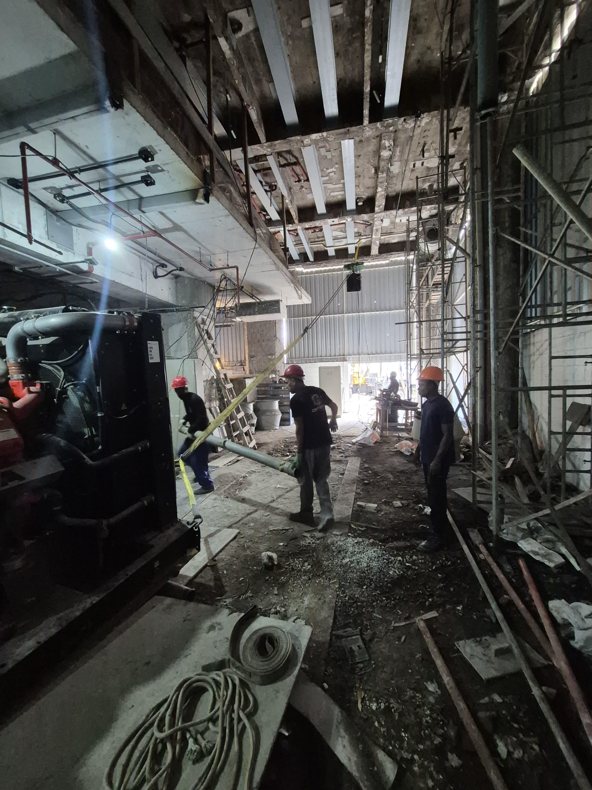

Executar remoções e desmontagens industriais com método, segurança e clareza comercial.
O papel da marca é transformar operações complexas em decisões administráveis para quem responde por obra, condomínio, manutenção ou patrimônio.
A CenterShip reposiciona desmontagem, remoção e retirada de materiais ferrosos como um serviço técnico de alta responsabilidade para construtoras, síndicos, engenheiros e administradores.

Prova visual de campo: máquinas, estrutura, cabos e equipe em ambiente de remoção técnica.
Operação realA CenterShip deve ser percebida como a empresa que entra quando o cliente precisa retirar, desmontar ou reorganizar infraestrutura pesada sem improviso, sem ruído e sem expor a obra a risco desnecessário.
O papel da marca é transformar operações complexas em decisões administráveis para quem responde por obra, condomínio, manutenção ou patrimônio.
No Rio de Janeiro, a marca pode ocupar o espaço de especialista confiável para serviços que exigem presença de campo e responsabilidade.
O tom deve ser direto, seguro e corporativo. Frases curtas, verbos de ação, linguagem de engenharia e foco em processo. Evitar promessas genéricas como “melhor preço” e preferir argumentos verificáveis: vistoria, escopo, equipe, acesso, remoção, limpeza e destinação.
O cliente precisa entender rapidamente o que a CenterShip remove, desmonta, compra, vende e organiza. A linguagem deve facilitar orçamento e qualificação do lead.
Retirada controlada de componentes, máquinas, cabos, guias, portas, estruturas auxiliares e materiais relacionados.
Desmobilização de máquinas, conjuntos metálicos e ativos técnicos em prédios, obras, galpões e instalações.
Desmontagem de estruturas, retirada de materiais ferrosos e limpeza técnica após remoção.
Remoção de cabos, suportes, trilhos, dutos, bases, tubos e componentes sem uso ou em substituição.
Avaliação de materiais e equipamentos com potencial de reaproveitamento, compra, venda ou destinação comercial.
As imagens de serviço são um ativo importante: elas comunicam altura, peso, ambiente técnico e presença operacional. O tratamento visual deve ser limpo, contrastado e documental.


A identidade deve preservar reconhecimento do nome CenterShip, mas elevar o sistema: menos ornamento, mais grade, mais contraste, mais confiança.
Recomenda-se manter a força do nome CenterShip, simplificar símbolo e seta em uma marca técnica, reduzir elementos redundantes e criar versões horizontal, vertical e monocromática.
Grafite para autoridade, aço para precisão, concreto para base operacional e âmbar como sinal de atenção, energia e movimento técnico.
Inter ou equivalente corporativa para clareza. Monoespaçada apenas em códigos de serviço, etapas, medições, rótulos e proposta comercial.
CenterShip não vende “retirada”. Vende controle técnico sobre ambientes onde improviso custa caro.
Traço linear, industrial, sem ilustrações simpáticas. Usar pictogramas de eixo, gancho, viga, cabo, caminhão e checklist.
Grades técnicas, linhas de corte, coordenadas, blocos de processo e marcações de inspeção.
Ambiente real, equipe, máquinas, metal, concreto e antes/depois. Evitar banco de imagem genérico.
Proposta, uniforme, capacete, fachada, assinatura, apresentação e redes sociais com o mesmo sistema.
Para clientes técnicos, uma boa landing precisa vender previsibilidade. A CenterShip deve mostrar etapas antes de falar em preço.
Identificação do equipamento, área de acesso, risco, volume de material e interferências.
Definição de equipe, ferramentas, sequência de desmontagem, carga, isolamento e comunicação.
Desmontagem, remoção, separação de material, limpeza da área e acompanhamento do responsável.
Registro da entrega, alinhamento de destinação e proposta para materiais com valor comercial.
Reposicionar a marca exige que a linguagem visual apareça nos pontos de contato em que o cliente decide confiança: proposta, visita técnica, assinatura, uniforme e apresentação.
Logo no topo, dados legais no rodapé, linha âmbar mínima e área limpa para escopo, condições e assinatura.
Separar escopo, exclusões, prazo, acesso, equipe, materiais, destinação e condições de pagamento.
Camisa grafite, marca clara no peito, identificação de função e aplicação em capacete quando permitido.
Posts com antes/depois, bastidores de segurança, checklist de síndico, explicação de materiais e cases regionais.
A presença digital deve organizar procura local por remoção, desmontagem, elevadores, ferragens e compra de materiais industriais no Rio de Janeiro.
Criar páginas e blocos para “desmontagem de elevador no Rio de Janeiro”, “remoção industrial RJ”, “retirada de estrutura metálica”, “compra de material ferroso” e bairros/regiões atendidas.
Publicar fotos reais de operação, categorias corretas, serviços separados, perguntas frequentes e posts semanais com obras executadas, sempre usando CenterShip.
Formulário curto: tipo de serviço, local, fotos do ambiente, urgência e responsável. CTA principal para diagnóstico por WhatsApp quando o número for definido.
Conteúdo técnico sobre preparação de área, remoção segura, reaproveitamento de materiais, riscos de desmontagem informal e checklist para condomínios e construtoras.
Até coletar depoimentos autorizados, a landing pode usar blocos de prova documental: fotos, tipos de cliente, responsáveis atendidos e registros de entrega.
“O que deve aparecer aqui: cumprimento de prazo, organização da área e comunicação com a obra.”
“O que deve aparecer aqui: segurança para moradores, limpeza posterior e clareza antes da execução.”
“O que deve aparecer aqui: avaliação de materiais, documentação do escopo e negociação objetiva.”
Essas respostas devem ser mantidas curtas e orientadas para ação. A meta é levar o visitante à vistoria ou envio de fotos.
Sim. A comunicação deve ser alinhada com responsável técnico, administração ou síndico para definir horários, acesso, isolamento e sequência da retirada.
Sim. Quando houver potencial comercial, a avaliação de materiais pode entrar no escopo de compra, venda ou destinação, conforme condição e volume.
O ideal é enviar local, fotos, tipo de material ou equipamento, acesso disponível e urgência. A CenterShip deve responder com necessidade de vistoria ou pré-escopo.
Elevadores continuam sendo um serviço importante, mas a nova marca deve comunicar um território mais amplo: remoção técnica, estruturas metálicas e materiais industriais.
Próximas informações a inserir: WhatsApp comercial, endereço, CNPJ, regiões/bairros atendidos, credenciais, depoimentos reais e fotos selecionadas de antes/depois.